Science in the Garden: Why do Tulips Open in Sunlight and Close after Sunset?
By Charles Xie ✉
Back to Infrared Explorer home page
Listen to a podcast about this article
Tulip flowers open during the day when the sun shines and close at night. Most flowers do not exhibit such behavior. So that is something to wonder about while you are enjoying their show of beauty in the spring. Since I have infrared cameras, I can easily take a look at their thermal images to see if there is anything worth noting. True to form, the technology never disappoints me. The following images show a few visible light pictures and their infrared light counterparts shot using a FLIR ONE Pro during a sunny day, at night, and early in the morning. If you do not have an infrared camera, don't worry. We also provide some interactive shows below via our Telelab for you to explore at your fingertips.
During the day
The thermal image below shows that the black gynoecium was more than 2°C warmer than the yellow petals at the time when the image was taken. As a warm place in early to mid spring is a magnet to insects, this may be tulips’ clever strategy to attract pollinators, considering that most of them do not emit a scent.
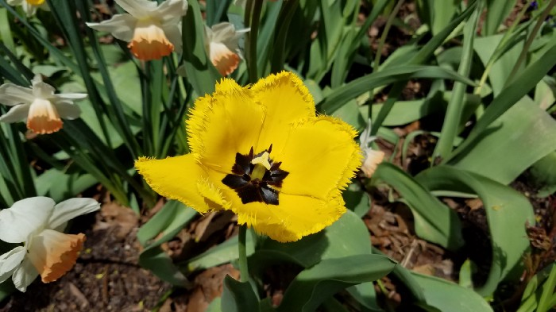
A tulip flower seen in visible light around 2 pm.
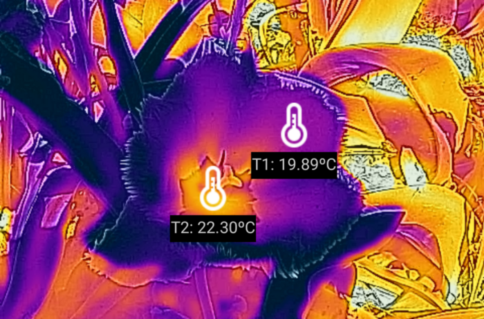
A tulip flower seen in infrared light around 2 pm.
Click HERE for an interactive show on Telelab
The result of this red tulip is similar to the yellow one, but the image shows 5°C of temperature difference between the black gynoecium and the red petals, possibly because this one looks like a deeper bowl that can keep the warmth better.
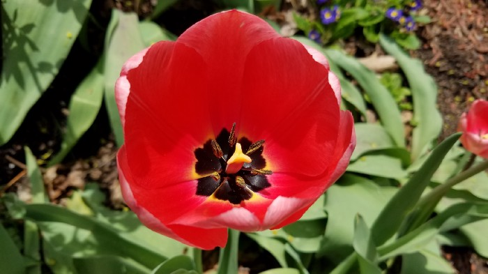
A tulip flower seen in visible light around 2 pm.
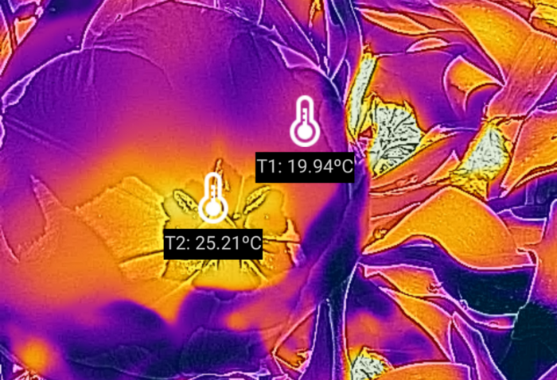
A tulip flower seen in infrared light around 2 pm.
Click HERE for an interactive show on Telelab
What about flowers that do not have a black gynoecium that absorbs more solar radiation? It seems a white flower with a yellow gynoecium can still manage to hold some heat, but not as significantly as the above two.
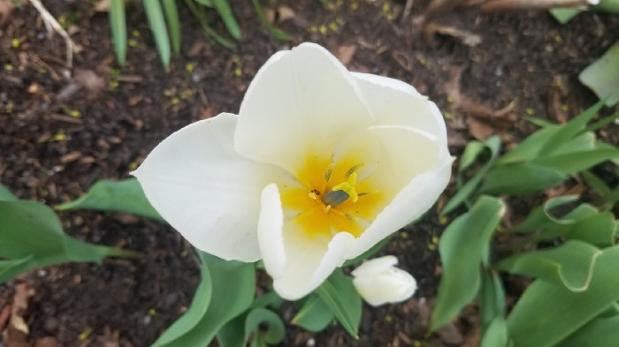
A tulip flower seen in visible light around 4 pm.
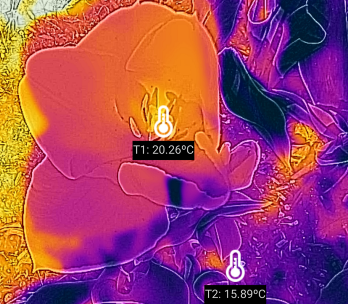
A tulip flower seen in infrared light around 4 pm.
Click HERE for an interactive show on Telelab
The same temperature distribution pattern can be observed with other flowers as well. The following images are those of muscari, also known as grape hyacinth (because they look like bunches of grapes), which blossoms at about the same time of the year with tulips in New England. Possibly because of their upside-down-urn shape, muscari flowers seem to hold the heat from the sun better as we can see from the stark contrast of the flowers and the leaves in the thermal image.
Muscari flowers seen in visible light around 4 pm.
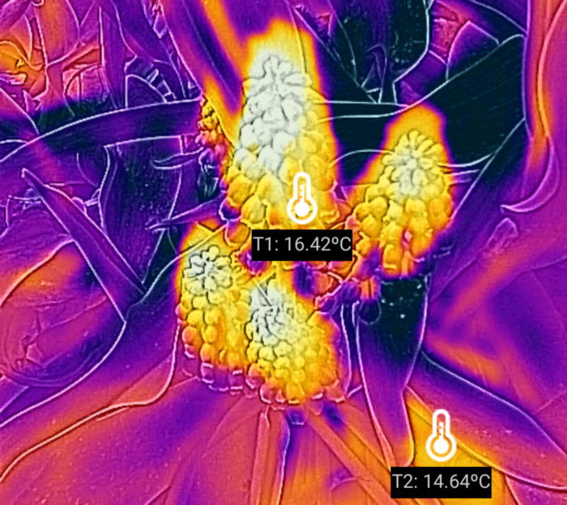
Muscari flowers seen in infrared light around 4 pm.
Click HERE for an interactive show on Telelab
At night
For how long can tulips store the heat they absorbed during the day inside their flowers after sunset? I took some thermal images around 11 pm. It struck me that they appeared to be excellent at maintaining the warmth. Hard to believe, isn't it? In my experience, temperature differences among non-biological objects tend to dissipate quickly. Not sure how the warmth of the tulip flowers could manage to last for that long.
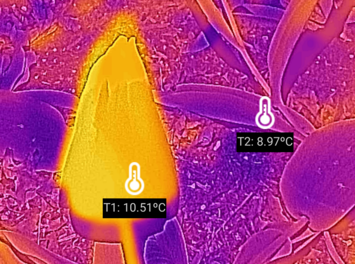
A tulip flower seen in infrared light around 11 pm.
The following image for multiple tulips shows the flowers were at least 1°C warmer than the leaves near midnight. That is really unbelievable to me!
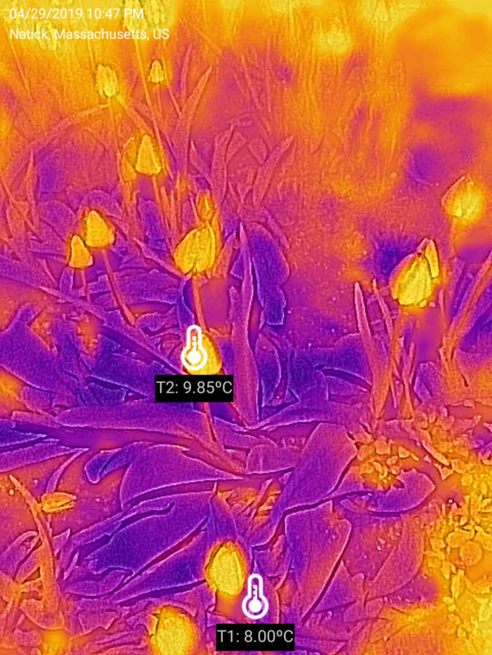
Tulip flowers seen in infrared light around 11 pm.
And it was not just the tulip flowers. The muscari flowers showed a similar thermal pattern as well.
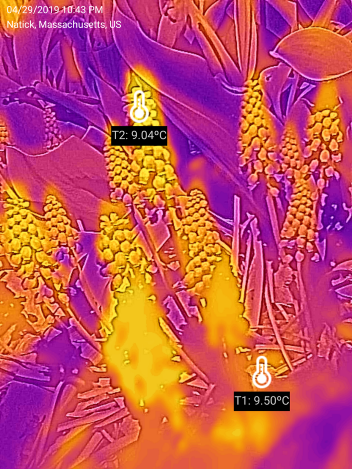
Muscari flowers seen in infrared light around 11 pm.
These thermal images may explain why tulips close at night. Imagine you were a little poor insect searching for a place to stay at a chilly spring night. Where do you prefer? With the heat harvested during the day, tulips provide cozy warm “hotel rooms” for insects. By checking into these free “hotels,” insects provide tulips free pollination services. A win-win deal!
In the morning
Are we sure that the temperature differences between the flowers and leaves were not due to their emissivity difference, I hear you ask? One way is to validate the results is to take pictures in the morning when the thermal energy is gone. The following images show that the temperature differences at around 7 am were not as significant as those in the earlier pictures I took, suggesting that the thermal patterns observed at night were real.
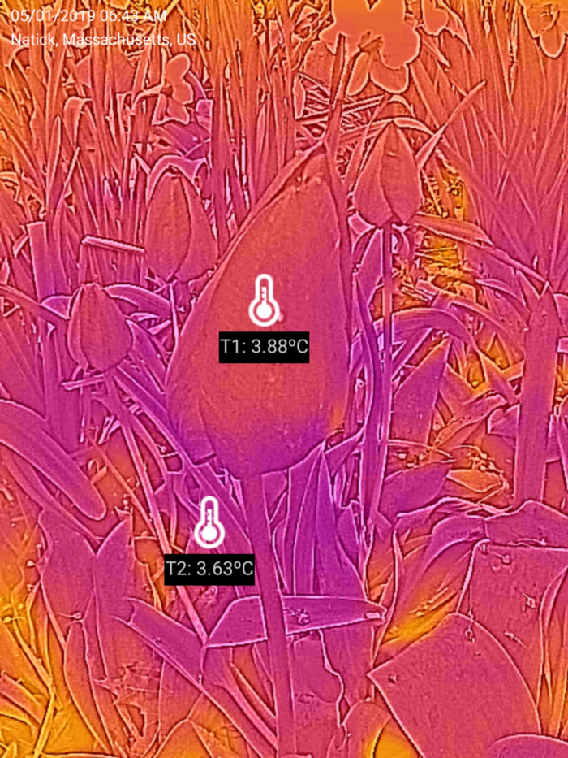
Tulip flowers seen in infrared light around 7 am.
Click HERE for an interactive show on Telelab
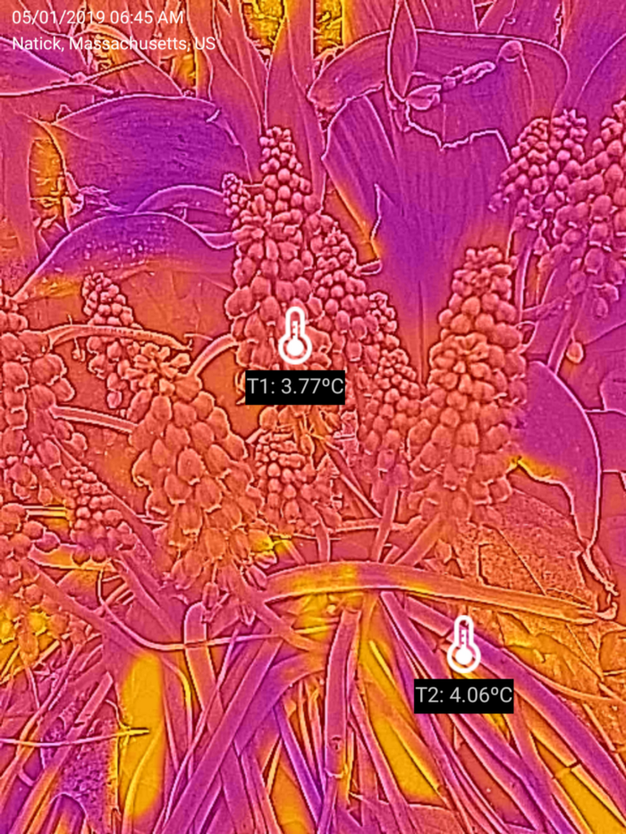
Muscari flowers seen in infrared light around 7 am.
Click HERE for an interactive show on Telelab
Conclusion
Based on these thermal images, we can speculate that the reason why tulips do not open on a cloudy or rainy day is because there isn’t much solar energy to gain and store for the night. Under such circumstances, they would just keep their doors shut.
With the price plummet of thermal cameras, we now have an incredibly powerful tool to observe a part of the natural world that used to be unseen. Wouldn’t it be wonderful to give this tool to kids so that their curiosity and enthusiasm in science can be ignited?